Prediction performance overview
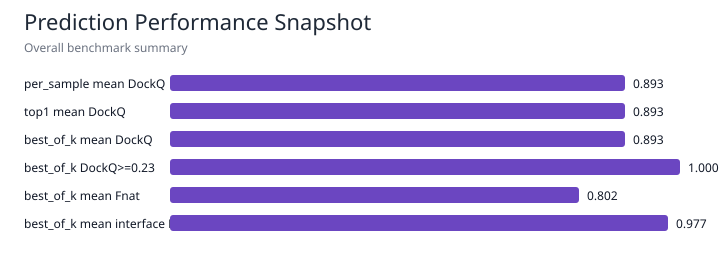
Method mean DockQ
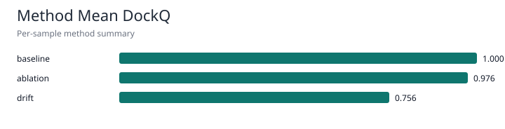
Status overview

Confidence labels

Mapping confidence vs DockQ

Interface recall vs precision

Diagnostic tag frequency

This report is a lightweight visual audit layer over the evaluator outputs. It is intended for benchmark triage, mapping-quality review, result explainability, and prediction-performance review.


| view | count | mean_dockq | mean_fnat | mean_interface_f1 | mean_mapping_confidence_score | success_rate_dockq_ge_0_23 | success_rate_dockq_ge_0_49 | success_rate_dockq_ge_0_80 |
|---|---|---|---|---|---|---|---|---|
| per_sample | 12 | 0.892567 | 0.802083 | 0.976923 | 0.928295 | 1.0 | 0.916667 | 0.75 |
| top1 | 12 | 0.892567 | 0.802083 | 0.976923 | 0.928295 | 1.0 | 0.916667 | 0.75 |
| best_of_k | 12 | 0.892567 | 0.802083 | 0.976923 | 0.928295 | 1.0 | 0.916667 | 0.75 |
| sample_id | target_id | method | status | dockq | fnat | interface_f1 | mapping_confidence_label | mapping_confidence_score |
|---|---|---|---|---|---|---|---|---|
| x001_perfect | X001 | baseline | success | 1.000000 | 1.000 | 1.000000 | high | 1.000000 |
| x002_rigid_transform | X002 | baseline | success | 1.000000 | 1.000 | 1.000000 | high | 1.000000 |
| x007_missing_ligand_residue | X007 | baseline | success | 1.000000 | 1.000 | 1.000000 | high | 1.000000 |
| x010_insertion_code | X010 | drift | success | 1.000000 | 1.000 | 1.000000 | high | 1.000000 |
| x009_extra_receptor_residue | X009 | drift | success | 1.000000 | 1.000 | 1.000000 | high | 0.930000 |
| x005_numbering_offset | X005 | ablation | success | 1.000000 | 1.000 | 1.000000 | high | 0.920000 |
| x006_chain_name_mismatch | X006 | ablation | success | 1.000000 | 1.000 | 1.000000 | high | 0.900000 |
| x008_sparse_atoms | X008 | baseline | success | 1.000000 | 1.000 | 1.000000 | low | 0.561539 |
| x011_false_contacts | X011 | ablation | success | 0.929086 | 1.000 | 1.000000 | high | 1.000000 |
| x012_combined_offset_and_shift | X012 | drift | success | 0.795131 | 0.625 | 0.769231 | medium | 0.828000 |
| x003_mild_ligand_shift | X003 | drift | success | 0.617792 | 0.000 | NaN | high | 1.000000 |
| x004_large_ligand_shift | X004 | drift | success | 0.368797 | 0.000 | NaN | high | 1.000000 |
| method | count | mean_dockq | mean_fnat | mean_interface_f1 | mean_mapping_confidence_score | success_rate_dockq_ge_0_23 |
|---|---|---|---|---|---|---|
| baseline | 4 | 1.000000 | 1.000 | 1.000000 | 0.890385 | 1.0 |
| ablation | 3 | 0.976362 | 1.000 | 1.000000 | 0.940000 | 1.0 |
| drift | 5 | 0.756344 | 0.525 | 0.923077 | 0.951600 | 1.0 |
| sample_id | target_id | method | status | mapping_confidence_label | mapping_confidence_score | dockq | fnat | diagnostic_tags | error_message |
|---|---|---|---|---|---|---|---|---|---|
| x008_sparse_atoms | X008 | baseline | success | low | 0.561539 | 1.000000 | 1.000 | sparse_atom_coverage;used_ca_fallback_irmsd;used_ca_fallback_lrmsd | |
| x012_combined_offset_and_shift | X012 | drift | success | medium | 0.828000 | 0.795131 | 0.625 | used_sequence_fallback;parse_warning_present;partial_interface_observed;likely_numbering_offset |
| target_id | count | mean_mapping_confidence_score | mean_interface_f1 | mean_dockq | success_rate_dockq_ge_0_23 |
|---|---|---|---|---|---|
| X001 | 1 | 1.000000 | 1.000000 | 1.000000 | 1.0 |
| X002 | 1 | 1.000000 | 1.000000 | 1.000000 | 1.0 |
| X005 | 1 | 0.920000 | 1.000000 | 1.000000 | 1.0 |
| X006 | 1 | 0.900000 | 1.000000 | 1.000000 | 1.0 |
| X007 | 1 | 1.000000 | 1.000000 | 1.000000 | 1.0 |
| X008 | 1 | 0.561539 | 1.000000 | 1.000000 | 1.0 |
| X009 | 1 | 0.930000 | 1.000000 | 1.000000 | 1.0 |
| X010 | 1 | 1.000000 | 1.000000 | 1.000000 | 1.0 |
| X011 | 1 | 1.000000 | 1.000000 | 0.929086 | 1.0 |
| X012 | 1 | 0.828000 | 0.769231 | 0.795131 | 1.0 |
| X003 | 1 | 1.000000 | NaN | 0.617792 | 1.0 |
| X004 | 1 | 1.000000 | NaN | 0.368797 | 1.0 |
These plots expose the per-sample distribution of each core evaluation metric, including structural RMSDs, contact recovery, lDDT-Ca, clash diagnostics, and interface precision/recall/F1.
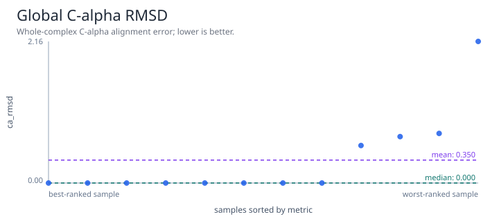
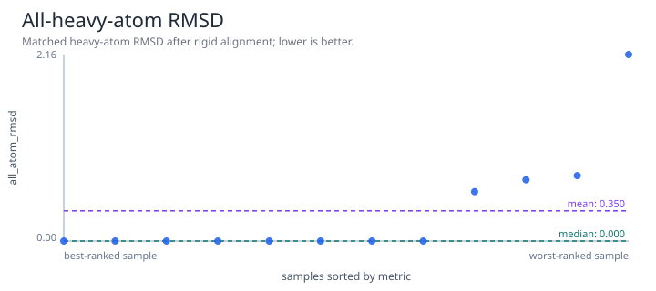
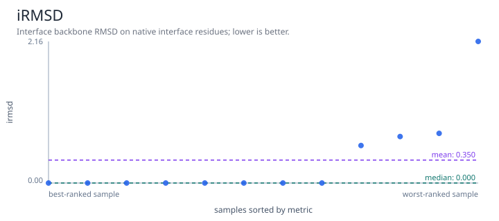
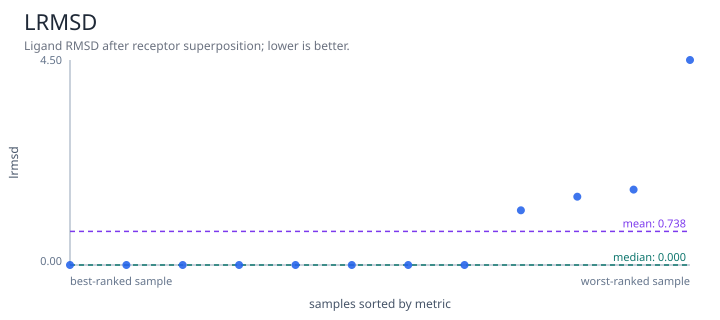
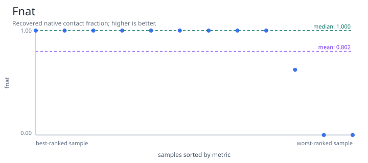
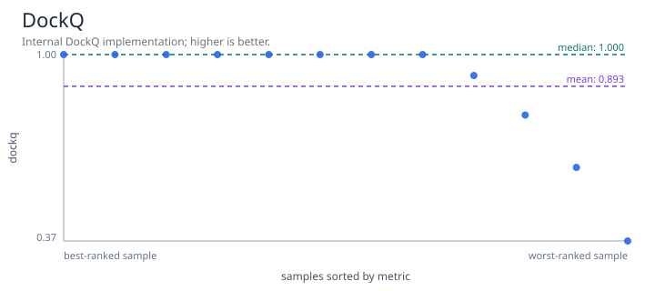
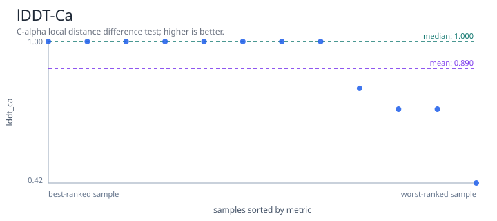
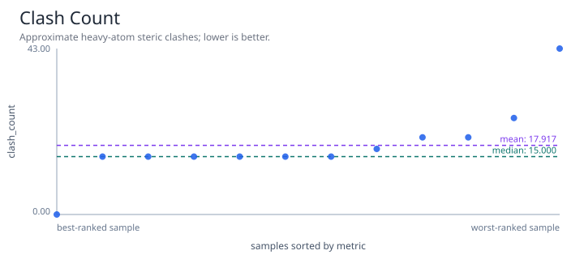
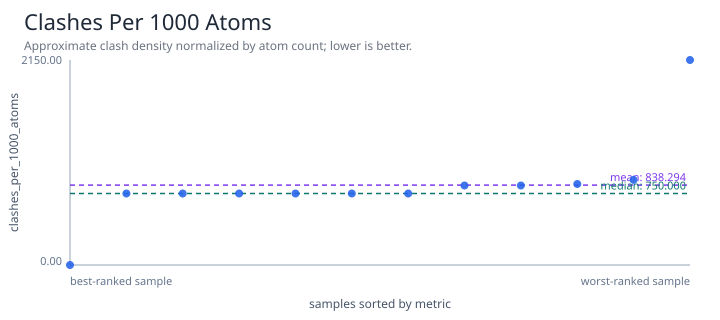
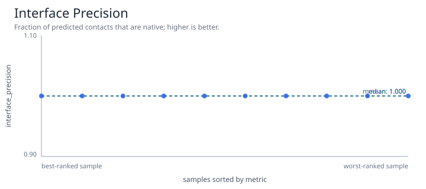
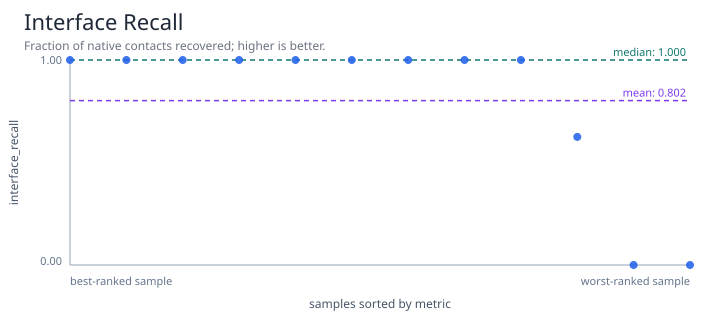
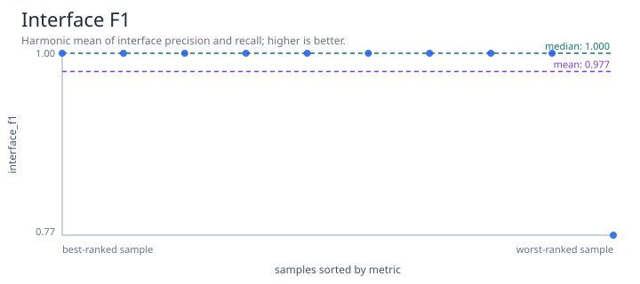